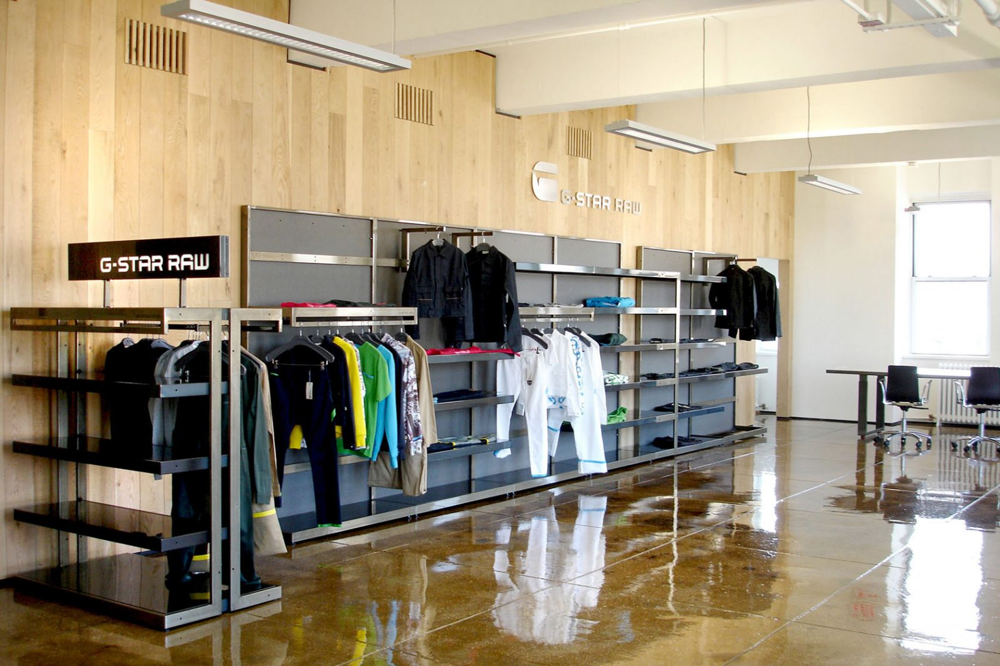

LACOSTE
Is G-star a good brand? They do frequently work with designers who make exclusive and limited-edition products for/in collaboration with G-Star & they also sell shoes, belts, coats etc. Both companies sell (relatively) good quality products but both Guess and G-Star have their own style so it depends on what you're looking for.

G-Star RAW (commonly called G-Star) is a Dutch designer clothing company, founded by Jos van Tilburg in Amsterdam in 1989, which produces high quality clothing. ... G-Star is influenced by military clothing. Inspirations of their designs come from vintage military apparel from around the world